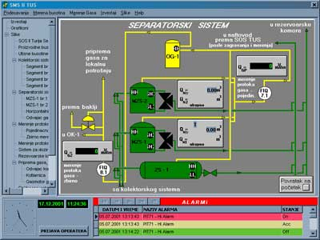

|
Izrada upravljackog i nadzornog softvera upotrebom objektno orijentisanih programskih jezika
|
Autori:
Velibor Ilić, ilicv@EUnet.rs,
Jovan Mirilović
ABSTRAKT: U radu se govori o postupku izrade nadzornih i upravljačkih programa upotrebom objektno orijentisanih programski jezika. Sa realizovanim primerom u programskom paketu Borland DELPHI.
KLJUČNE REČI: procesno upravljanje, nadzorni sistemi, objektno orijentisano programiranje, baze podataka, klijent/server
Datum izrade: April, 2001.
Rad je prezentovan na 2-tom seminaru Automatike AUP 2000
Uvod
Objektno orijentisani programski jezici
Objektno orijentisan razvoj SCADA aplikacija
Delphi SCADA
Procesne komponente
Zaključak
Literatura
Osnovna odlika standardnih SCADA paketa (kao što su GENESIS, FIX ili VONDERWARE) je da su to paketi napravljeni tako da se brzo, efikasno i bez programiranja mogu dobiti rezultati, interfejs prema korisniku, i akvizicija podataka. Takav sistem ima više nedostataka, a neki od njih su sledeći:
- Ograničenja u izradi korisničkog interfejsu prema zahtevima krajnjeg korisnika (nedostatak menija i dijaloga).
- Nedostatak pravog programskog jezika kojim bi se mogle programirati realne situacije koje u gotovom paketu nisu unapred predviđene.
- Nemogućnost kreiranja iole složenije aplikacije.
- Za svaki specifičan hardver mora da se dokupljuje odgovarajući softverski drajver, baš za tu SCADU, a prosečna cena drajvera je $999.
- Obično se SCADA prodaje po segmentima, kao što su generator korisničkog interfejsa, akvizicija, baze podataka, generator izveštaja itd. Naravno svaki deo ima svoju cenu, tako da je prosečna cena kompletnog paketa između 10000 i 20000$.
- Cena za krajnjeg korisnika se obrazuje tako da se uzima cena rada kreiranja u SCADI + cena RUN TIME modula za tu SCADU, čija je prosečna cena 2/3 cene razvojnog paketa. Na taj način se dolazi do prosečne cene za krajnjeg korisnika koja ne može biti manja od 15000$.
Razvoj savremenih objektno orijentisanih programskih jezika u WINDOWS okruženju sa mogućnošću vizuelnog programiranja putem komponenti omogućio je enormno ubrzanje u kreiranju programa raznih namena. Naročito se razvio deo koji se odnosi na upravljanje bazama podataka. Praktično svi veliki proizvođači softvera imaju svoje programske pakete Microsoft ima komplet aplikacija pod nazivom Visual Studio (Visual C++, Visual Basic), Borland (Inprise) ima Delphi, C++ Builder, J++ Builder itd...
Osnovna odlika ovih alata (sa skraćenim nazivom RAD, Rapid Application Develop) je da se program kreira na način kao što se slažu Lego kocke. Programi imaju niz predefinisanih komponenti, formi i čarobnjaka za razne delove programa, koje se slažu na određeni način u celinu, odnosno gotov program. Naravno za korišćenje ovih alata je potrebno određeno predznanje, koje se može steći na raznim kursevima iz odgovarajuće oblasti. Uostalom ni korišćenje standardnih SCADA paketa je nemoguće bez nekog predznanja i obuke.
DELPHI SCADA predstavlja sistem na bazi Borlandovog programskog jezika DELPHI sa skupom komponenti i šablona koji DELPHI pretvaraju u SCADA paket. Na sličan način se može realizovati SCADA paket i na drugim objektno orijentisanim programskim jezicima koji bi se proširili skupom komponenata za procesno upravljanje. Prednosti ovakvog SCADA paketa su sledeće:
- Ovako razvijen softver može da se izvršava na standardnim PC računarima sa Windows ili Linux operativnim sistemom.
- Programer ima slobodu da kreira izgled korisničkog interfejsa prema zahtevima krajnjeg korisnika.
- Potpun objektni pristup programiranju procesa, što nema ni jedan od standardnih SCADA paketa. Čak ni standard IEC1131 koji opisuje problematiku procesnog upravljanja nije definisao objektni pristup.
- Implementacija procesnog upravljanja je drastično lakša (naročito kod velikih projekata) kada se radi sa objektno orijentisanim paketima.
- Postojanje pravog programskog jezika (Pascal, C++).
- Softver napisan na ovaj način je pregledan i lako je izmenljiv ukoliko se promene uslovi u sistemu kojim se upravlja.
- Pošto se veći deo softvera piše jednostavnim postavljanjem gotovih komponenti na forme i njihovim međusobnim povezivanjem promenom parametara, pomoću properti editora, smanjuje se mogućnost pravljenja greške.
- Nema ograničenja u broju signala, lako se kreiraju aplikacije sa 20 kanala kao i one sa više hiljada.
- Softver za nadzor i upravljanje se ne prodaje po segmentima već predstavlja jedinstvenu celinu sa svim elementima koje imaju standardne SCADA aplikacije. Cena softvera izrađenog na ovakav način je bitno niža, jer se u cenu ne uračunava poseban RUN-TIME modul.
Delphi SCADA je potpuno objektno orijentisana, što drastično pojednostavljuje izradu procesnih aplikacija, kako na nadzornom računaru, tako i na procesnom. Svaki tehnološki element može se prikazati kao objekat, sa svim svojim signalima kao i ponašanjem. Povezivanje objekata sa signalima se izvodi bez programiranja izborom iz properti editora.
Delphi SCADA sadrži sledeće elemente:
- Skup procesnih komponenti podeljenih u 13 paleta prema grupama funkcija.
- Predefinisani skup formi koje predstavljaju procesni projekat. Na ovim formama se vrši vizualizacija realnog procesa.
- Forme za prikaz grafikona i tabelarnih izveštaja.
- Skup raznih dijaloga.
Komponente su dizajnirane tako da se metode objekata automatski izvršavaju bez posebnog programiranja (recimo prikaz na instrumentu, konverziju napona analognog signala u merne jedinice itd).
Signali koji se dobijaju iz realnog sistema i interni (pomoćni) signali se predstavljaju komponentama (TAnalogSignal i TDigitalSignal). Signali su grupisani u logičke celine unutar posebnih objekata, u kojima se vrši i njihova obrada (TDataModul-ima).
Komponente koje se upotrebljavaju, mogu se podeliti na vizuelne (preko kojih se prikazuje situacija nadgledanog sistema HMI) i nevizualne komponente koje omogućavaju očitavanje i obradu signala iz realnog sveta.

Slika 1. - izgled SCADA aplikacije
Postupak izrade SCADA aplikacija se sastoji iz sledećih koraka:
- Deklaracija i obrada signala iz procesa
- Povezivanje računara
- Kreiranje korisničkog interfejsa
- Definisanje alarmnih situacija
- Zaštita osetljivih delova programa preko sistema lozinki
- Praćenja eksternih događaja sa procesnog računara
- Praćenje rukovanjem programa
- Arhiviranja vrednosti analognih signala
Skup komponenti je podeljen na funkcionalne grupe (palete):
DEKLARACIJA I OBRADA SIGNALA IZ PROCESA
Komponente za deklaraciju i obradu signala iz procesa sastoje se od dva objekta (TDigitalSignal i TAnalogSignal) pomoću kojih se definišu svi digitalni i analogni signali iz procesa, kao i svi pomoćni signali koji se koriste u SCADI.
LOGIČKA OBRADA DIGITALNIH SIGNALA
Skup komponenti za logičku obradu digitalnih signala omogućava izvršavanje logičkih funkcija nad signalima, bez pisanja i jedne linije programskog koda. Signali se jednostavno mišem povezuju pomoću link editora digitalnih signala. Putem komponenti realizovane su sledeće funkcije (NOT, AND, OR, analogni i digitalni Counter, i drugi).
KOMPONENTE ZA OBRADU ANALOGNIH SIGNALA
Preko ove grupe komponenata su realizovane sledeće funkcije:
- Sumiranje analognog signala. Koristi se recimo za izračunavanje ukupnog protoka vode u proteklom vremenskom periodu.
- Konverzija vrednosti signala iz jedne merne jedinice u drugu. Koristi se recimo za pretvaranje napona u temperaturu.
- Softverski PID regulator. Na primer za regulaciju temperature.
- Termo par, za konverziju napona termo para u temperaturu.
- FFT brza Furijeova transformacija. Koristi se za izračunavanje frekventnog spektra nekog ulaznog signala. FIR digitalni filter. Digitalni filter zasnovan na brzoj Furijeovoj transformaciji i inverznoj Furijeovoj transformaciji. Predstavlja nisko propusni težinski filter.
POVEZIVANJE RAČUNARA
Paleta se sastoji od komponenata koje omogućavaju komunikaciju između dva ili više računara, a koja se odvija putem NetBIOS ili TCP/IP mrežnog protokola i preko Etherneth kartica (10 MB ili 100 MB). Način rada je Client/Server tipa i omogućena je komunikacija pod WINDOWS, DOS i LINUX operativnim sistemima.
PRIKAZ I PODEŠAVANJE VREDNOSTI ANALOGNIH SIGNALA
Grupa komponenti koja omogućava prikaz i promenu vrednosti signala. Realizovani su komponente u obliku prekidača, klizača, progres barova, mernih instrumenata.
VIZUALIZACIJA PROCESA
Grupa komponenata koja omogućava vizuelno predstavljanje situacije u realnom procesu. Komponente omogućavaju:
- Promenu boje objekta u nekom geometrijskom obliku (četvorougao, krug, i sl.) u zavisnosti od stanja signala.
- Smenjivanje slika u zavisnosti od signala.
- Pokretanje ili zaustavljanje neke animacije.
- Promenu nijanse boje u zavisnosti od intenziteta signala (kod analognih signala).
ALARMNI SISTEM
Paleta sa komponentama koje omogućavaju detektovanje i evidenciju alarmnih situacija u sistemu kojim se upravlja. Realizovane komponente detektuju promene digitalnih signala i analognih signala (u željenom opsegu sa razlikovanjem gornje i donje granice). Kada se pojavi alarmna situacija na ekranu se pojavljuje tekstualna poruka koje se beleži i u bazu podataka, što kasnije omogućava generisanje izveštaja o pojavi alarmnih situacija u određenom vremenskom periodu. Komponente imaju mogućnost povezivanja sa odgovarajućom zvučnom porukom koja korisniku skreće pažnju na pojavu alarma.
BEZBEDNOSTNE KOMPONENTE
Sistem komponenti koji omogućava zaštitu pojedinih delova programa pomoću lozinki. Pored zaštitne uloge sistem komponenti omogućava praćenje upotrebe procesne aplikacije (startovanje i zatvaranje programa, podešavanje parametara, generisanje izveštaja). Svaka promena operatora (unos nove lozinke) se beleži u bazu podataka tako da se lako može utvrditi koji operator je bio prisutan kada se vršila izmena parametara sistema ili kada se dogodila alarmna situacija u nadgledanom sistemu. Komponente se mogu podesiti da se dijalog za unos lozinke pojavi u tačno određeno vreme (evidentiranje promene operatera prilikom promene smene).
PRAĆENJA EKSTERNIH DOGAĐAJA SA PROCESNOG RAČUNARA
Pomoću skupa ovih komponenti se prate promene stanja signala iz realnog sistema. Pojava ovakvih signala ne predstavlja alarmnu situaciju ali je bitno da evidentira da su se dogodili i kada su se dogodili (na primer puštanje u rad nekog motora).
PRAĆENJE PROMENE VREDNOSTI ANALOGNIH SIGNALA
TAnalogSignalRecoder komponenta na koju se vezuju analogni signali čiju vrednost želimo da pratimo radi kasnije obrade. Ima osobinu da automatski kreira sva potrebna polja u bazi sa imenima analognih signala koji su vezani za nju. Putem propertija određuje se intenzitet snimanja u bazu, veličina baze (može biti fiksna ili ne), da li se popunjava sa test podacima za vreme dizajniranja programa ili ne.
GENERISANJE IZVEŠTAJA
Izveštaji mogu biti grafički ili tabelarni, i uglavnom se generišu iz baza podataka. Izveštaji se mogu prilagoditi potrebama krajnjeg korisnika. Neki od mogućih izveštaja koji se mogu dobiti su:
- Izveštaj o alarmima u određenom vremenskom periodu.
- Izveštaj o događajima u realnom sistemu u određenom vremenskom periodu.
- Izveštaj o upotrebi procesne aplikacije (startovanje i izlasci iz programa i podešavanje osetljivih delova programa.
- Tabelarni izveštaj o promeni analognih signala u određenom vremenskom periodu (temperature, pritisci, nivoi)
- Grafički izveštaj koji vadi podatke iz baze AnalogRecorderTable, a može da prikazuje i trenutne vrednosti iz tih merenih veličina
Sistem izrade SCADA softvera preko specijalno dizajniranih objekata (komponenti) u standardnim objektno orijentisanim jezicima se po lakoći upotrebe i brzini izrade softvera, približio standardnim paketima za izradu SCADA. Sve veći broj proizvođača procesnih (PLC) računara, isporučuje dodatne module za komunikaciju sa svojim uređajima, pomoću ActiveX komponenti. Takođe se pojavljuje veći broj proizvođača SCADA paketa koji isporučuju svoje sisteme kao ActiveX komponente. Na taj način se sve više širi upotrebna vrednost softverskog paketa za izradu SCADA softvera prikazana u ovom radu.
SmartSCADA komponente za Delphi 6
postavljeno za download 22.12.2001.
zadnja izmena 22.01.2002.
Download!!!
SmartSCADA V1.0 (SmartSCADA.zip 676Kb)
https://www.dropbox.com/s/cspphdqodr4jnyq/SmartSCADA.zip?dl=0
SmartSCADA primeri
postavljeno za download 22.12.2001.
zadnja izmena 22.01.2002.
Download!!!
SmartSCADA primeri (examples.zip 165Kb)
https://www.dropbox.com/s/poanxdfgjytfhcq/SCADAexamples.zip?dl=0
[1] Savić, D., (1992): “Uvod u objektno programiranje”, PC Program, Beograd
[2] Yao. P., Leinecker, C. R., (1995): “Visual C++ 5 Biblija”, Mikro Knjiga, Beograd
[3] Papeš, I., (1990): “Turbo Paskal 5.5”, Naučna Knjiga, Beograd
[4] Hansen, A., (1991): “Programiranje na jeziku C”, Mirko Knjiga, Beograd
[5] Stajić, D., Bilinski, P., (1991): “Računarske telekomunikacije i mreže”, Tehnička Knjiga, Beograd
[6] Stojić, M., (1978): “Kontinualni sistemi automatskog upravljanja”
[7] Cantu, M., (2000): “Delphi 5, Detaljan Izvornik”, Kompjuter biblioteka, Čačak
[8] Borland, (1992):"Programers reference"
[9] Borland, (1992):"Languge guide"
|